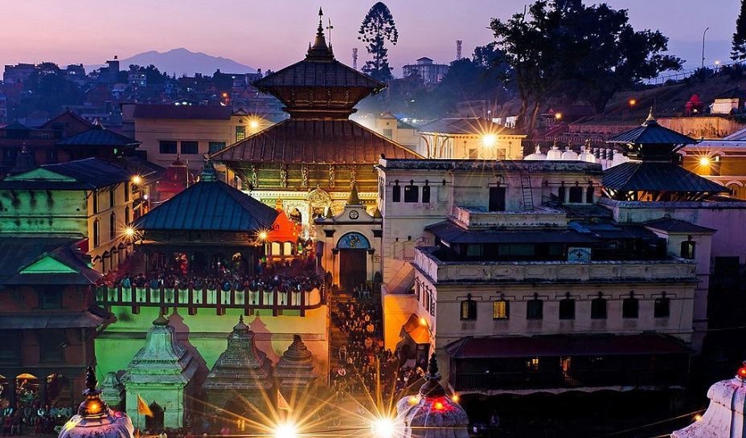

Pashupatinath Temple (Nepali: श्री पशुपतिनाथ मन्दिर) is a Hindu temple dedicated to Lord Pashupati, and is located in Kathmandu, Nepal near the Bagmati River. This is currently the largest temple in the world.Pashupatinath Temple is the oldest Hindu temple in Kathmandu. It is not known for certain when Pashupatinath Temple was built. But according to Nepal Mahatmaya and Himvatkhanda, the deity here gained great fame there as Pashupati.
Legend that had been told
One legend says that Shiva and Parvati took the form of antelopes in the forest on the Bagmati river's east bank. The gods later caught up with him and grabbed him by one of his horns, forcing him to resume his divine form. The broken horn was worshipped as a linga, but over time it was buried and lost. Centuries later a herdsman found one of his cows showering the earth with milk, and after digging at the site, he discovered the divine linga of Pashupatinath.
Architecture
This main temple is built in the Nepali pagoda style of architecture. The two-level roofs are of copper with gold covering. The temple rests on a square base platform with a height of 23m 7 cm from base to pinnacle. It has four main doors, all covered with silver sheets. This temple has a gold pinnacle (peak). Inside are two garbhagrihas: the inner garbhagriha or sanctum sanctorum is where the idol is placed, and the outer sanctum is an open corridor-like space.
If you are a devote and are intreseted in religious thing i will definitely recommend this place to you. The art style of the gods, sculptur are very facinating and there are artis every day here so definitely don't miss it out.
Must visit!!